Overview
In Thailand, 45.4% of dialysis patients under the Universal Coverage Scheme start dialysis unplanned. Our TDRI research traced this to delays in the system and delays in patients' own decisions, and found that families — who shape many of those decisions — are largely left out of the information loop. View this Case Study →
Promjai responds to that gap. Its name comes from the Thai word พร้อมใจ — roughly "ready, and of one heart" — which is what the service tries to create: a family that is informed together and prepared together, well before a crisis.
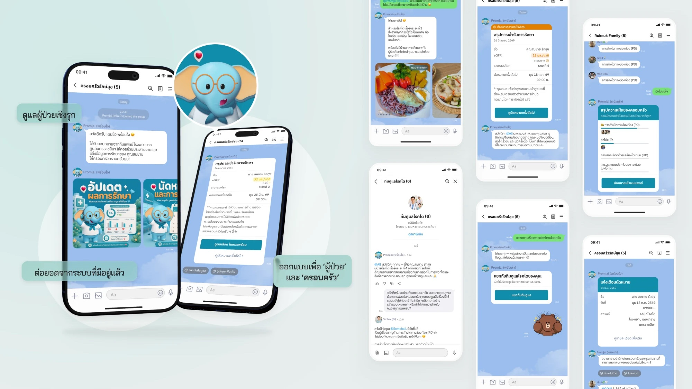
Why families
Stakeholder mapping in our research showed that families play a major role in care and treatment decisions, yet receive little treatment information — especially early in the disease, when they are not the primary carer. The problem tree echoed this: relatives who don't cooperate with the care plan, and patients who can't reach a decision, were both on the path to unplanned dialysis.
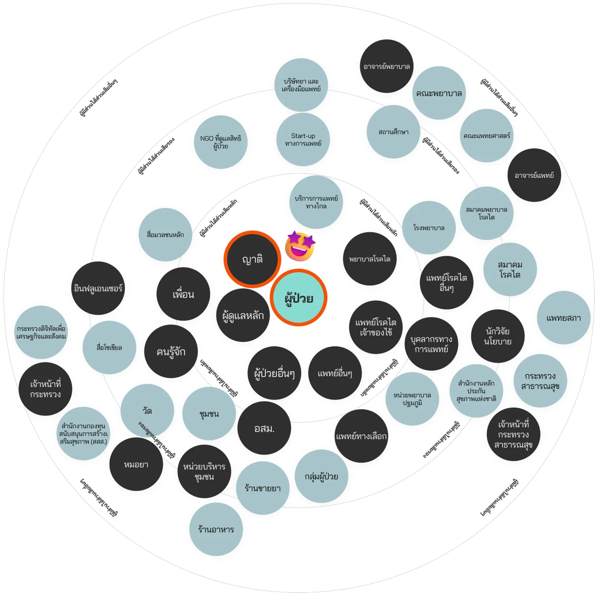
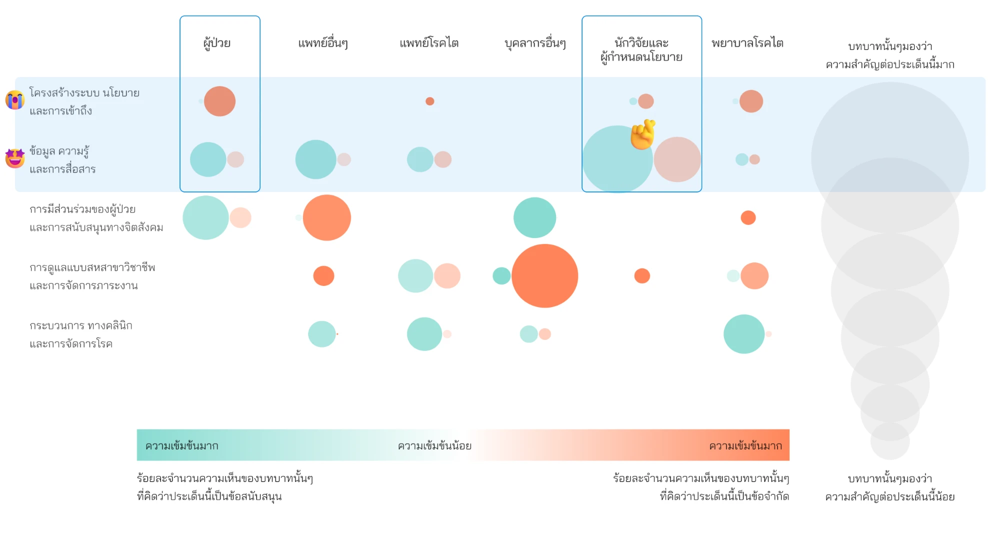
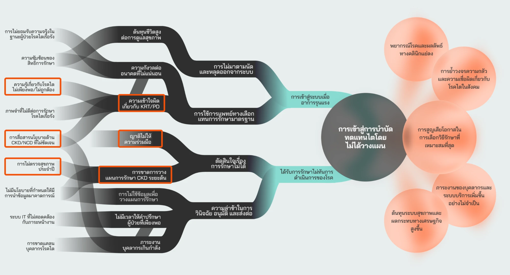
The pattern is familiar in clinical settings as the "Daughter from California" problem: a relative who lives far away arrives late in the illness and pushes for high-stakes treatment without the context the rest of the family has built up. The fix isn't to keep relatives out — it's to bring them in early, with the same information, at the same time.
Design principles
01Go to users — don't make them come to us
No new app to download or learn. Promjai joins the LINE group the family already uses every day.
02Design for the family, not only the patient
Treatment information has to reach everyone with a role in care — not just whoever happens to be sitting in the consultation room.
03Build on what already exists
Promjai links to Mor Prom (หมอพร้อม), the government's health platform, and to existing hospital systems, rather than duplicating records or creating another channel for clinicians to maintain.
Promjai across the journey
Our to-be service blueprint follows the patient through three stages. Promjai isn't a feature that lives in one of them — it is a thread that runs through all three, stepping in at the moments where the as-is journey showed families dropping out of the loop.
Where Promjai steps in
- Diagnosed as CKDNurse introduces Mor Prom and Promjai to the patient and primary carer.
- Service onboardingPatient invites Promjai into the family LINE group; each member picks their role.Each member can set what they're notified about in a private chat.
- Conservative careVisit summaries sent to the whole family, including relatives who live far away.
- Seeking alternativesPlain-language answers to everyday questions — diet, what eGFR means — plus stage-appropriate learning content.
- Follow-upReminders two days ahead, with preparation instructions; family confirms who's coming.Missed appointments are followed up and rebooked.
- TriggerWhen results cross a threshold (e.g. eGFR below 20), the family is alerted with an explanation.
- KRT onboardingSpecialist questions are handed to the kidney care team in a direct chat.HD, PD and palliative care options sent a week before the decision appointment.
- Shared decision-makingFamily shares a preliminary preference, summarised for the care team — explicitly not the final decision.
- Reach decisionPatient, family and clinicians decide together, in the appointment.
Key moments
Each moment below shows the conversation Promjai has with the family, in the Thai LINE screens as designed.
01Onboarding the family
The patient invites Promjai into the family's existing LINE group. Promjai introduces itself as assigned by the hospital's care team, then asks each member to pick their role — patient, spouse, son or daughter, parent, relative or carer — so it knows who it is talking to. In a private chat, each person can view lab results and treatment documents and choose which updates they receive.
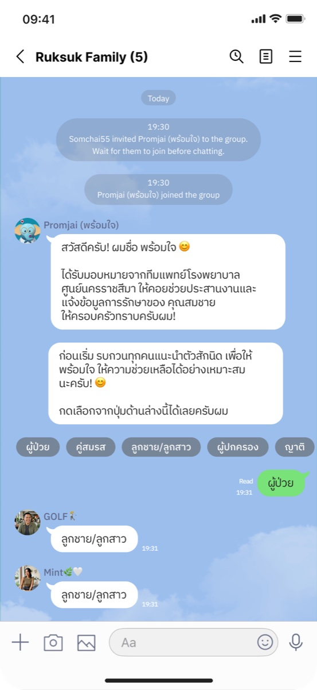
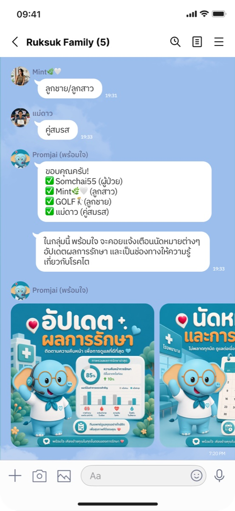
02Appointments, and who's coming
Two days before each appointment, Promjai reminds the family, adds preparation instructions such as fasting before a blood test, and asks who can go with the patient. If an appointment is missed, it follows up and rebooks — addressing the no-show loop we saw repeatedly in the as-is journey.
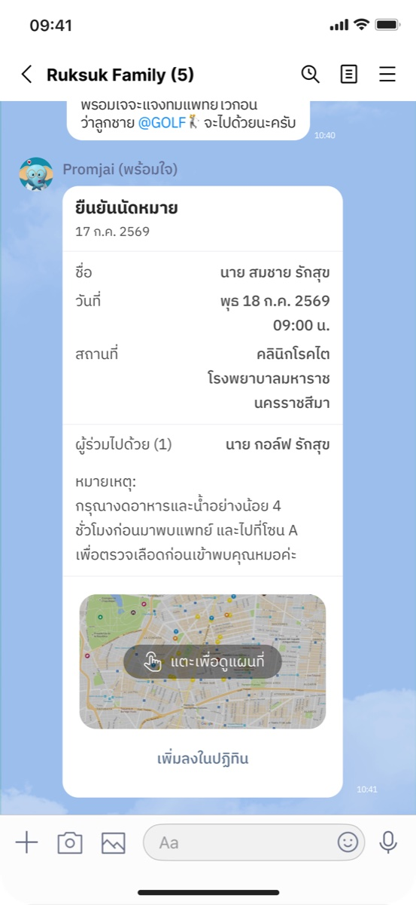
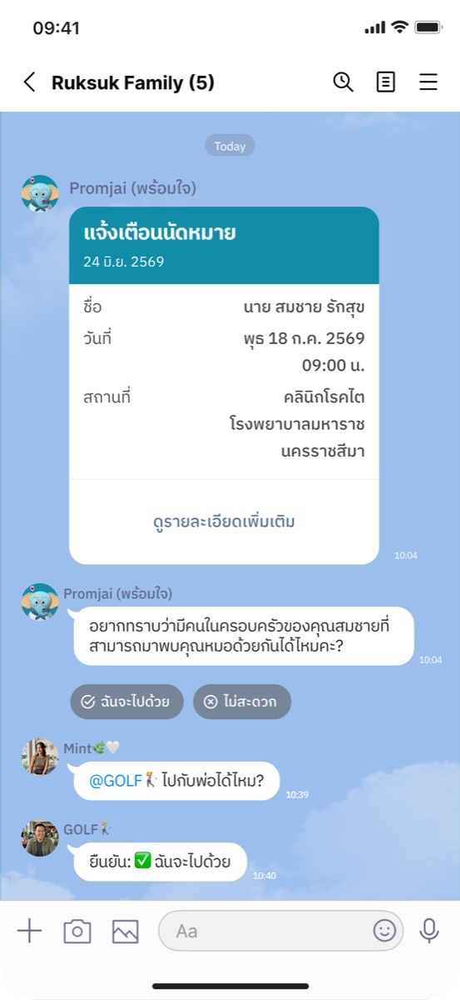
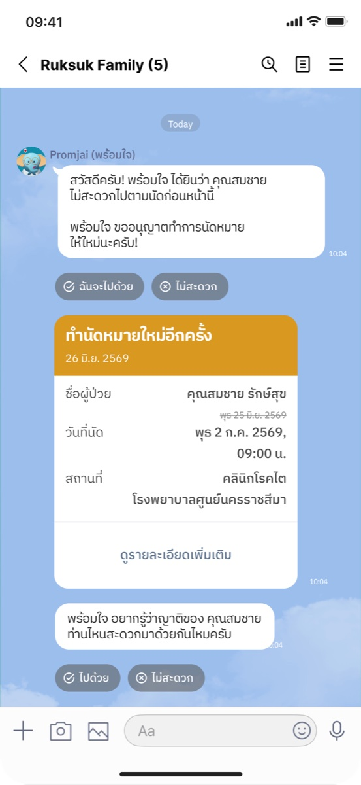
03Treatment updates, for everyone at once
After each visit, a summary of the results — eGFR, stage, next appointment and the doctor's note — goes to the whole group, with a link to view the full results in Mor Prom. When results cross a set threshold, such as eGFR dropping below 20, the update is flagged as needing special attention and explains what it means.
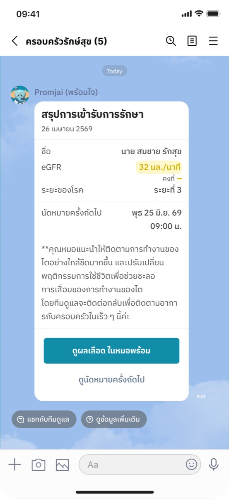
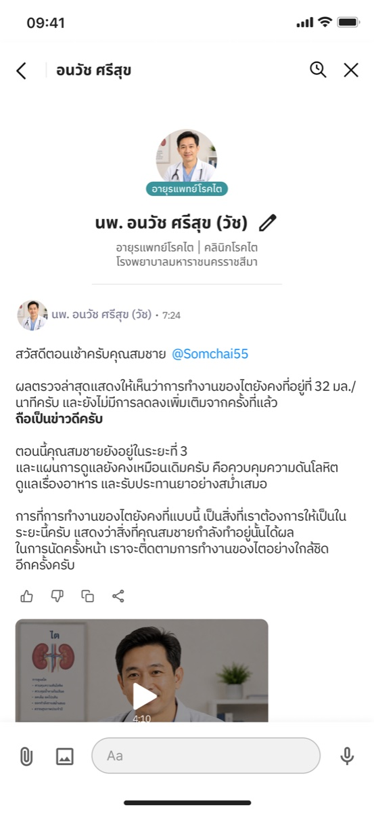
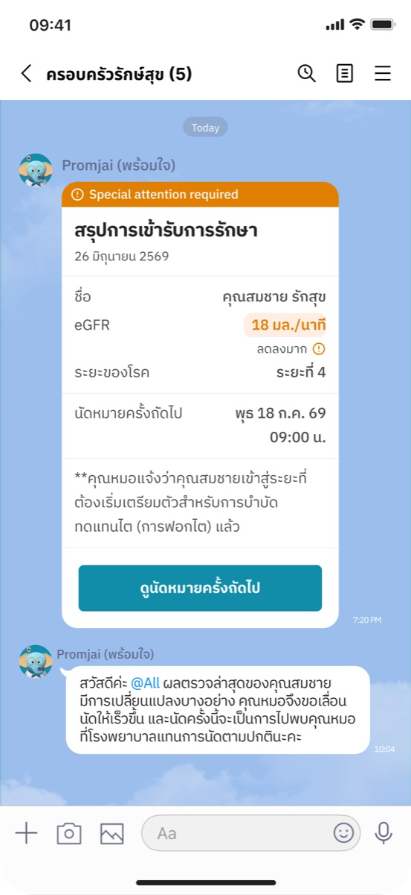
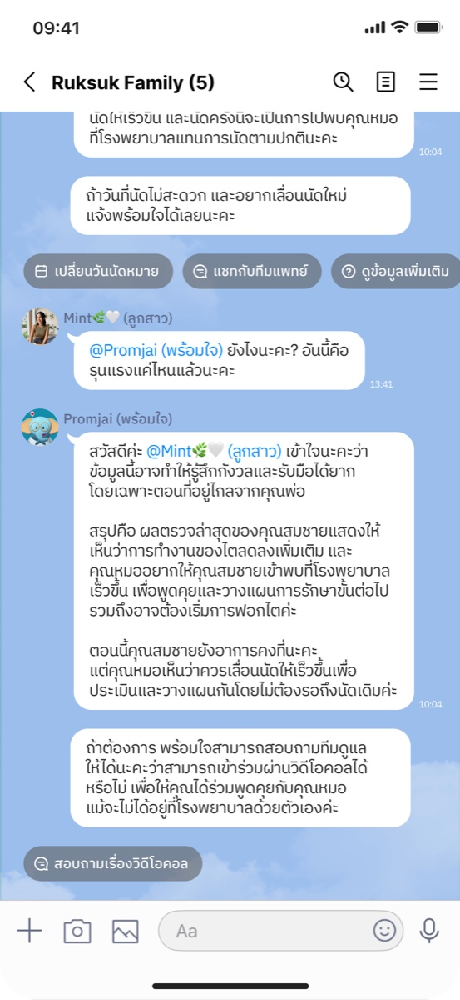
04Everyday questions, answered now
Between appointments, families have questions they don't want to "bother the doctor" with — what can he eat, what does this number mean. Promjai answers general questions straight away in plain language, shares short learning videos matched to the patient's stage, and points to restaurants with kidney-friendly menus from the NCD restaurant network, another of our proposals.
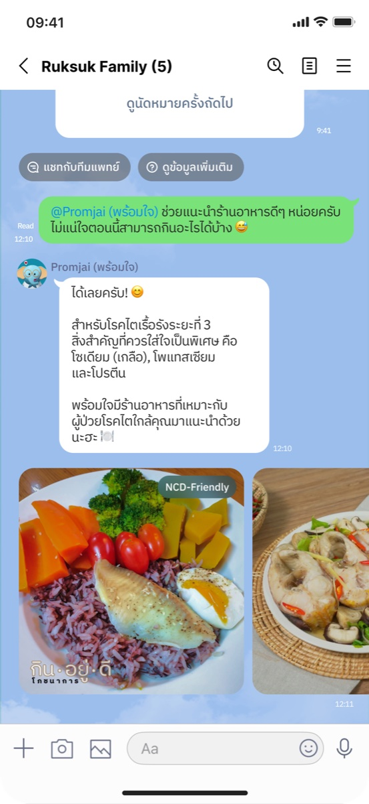
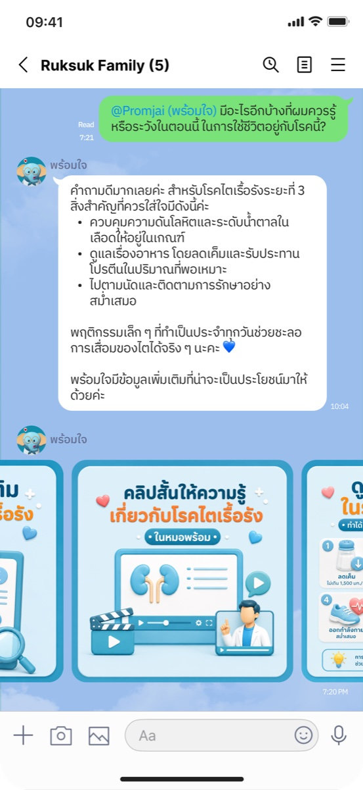
05Knowing when to hand over
Promjai keeps a clear boundary between what a bot should answer and what needs a clinician. Questions beyond its scope — including anything that sounds urgent — are passed to a nurse, with a confirmation and an expected response time. For deeper questions, such as dialysis options, it opens a direct chat with the patient's kidney care team, where a specialist can reply.
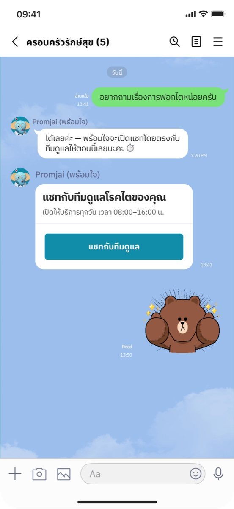
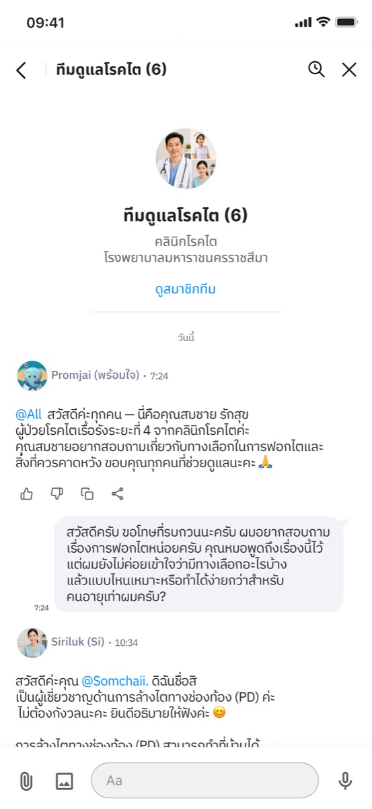
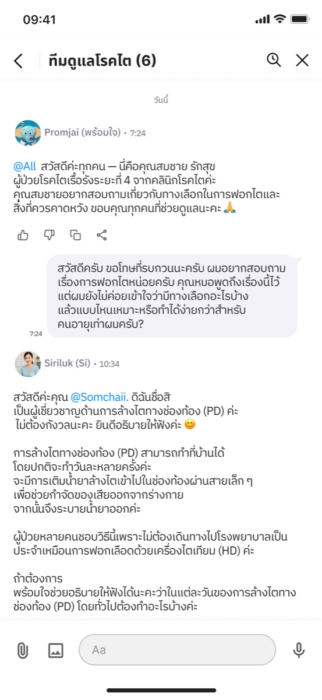
06Preparing for the decision together
A week before the shared decision-making appointment, Promjai sends an overview of the options — haemodialysis, peritoneal dialysis and palliative care without dialysis — so the family has time to understand them. It then asks each member for a preliminary preference and sends a summary to the care team, stating clearly that this is input for the conversation, not the final decision.
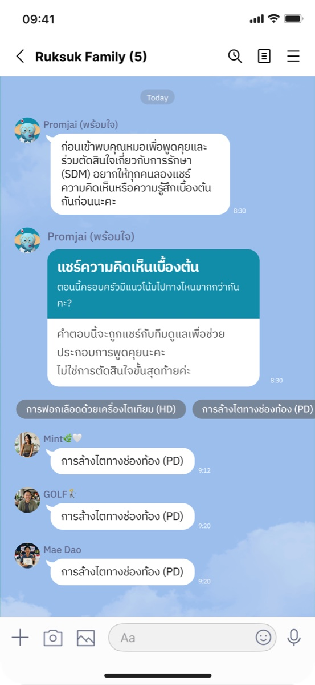
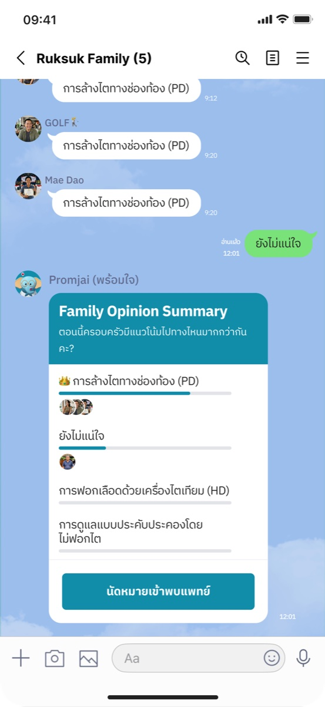
Design tensions
01Shared visibility vs. patient privacy
Putting clinical updates in a group chat is the point of Promjai — and its biggest risk. The design makes the patient the one who invites Promjai in, and gives every member a private chat to control what they receive. An open question for testing is whether patients also need finer control over what the group sees, not only what each member is notified about.
02Instant answers vs. clinical safety
Answering general questions immediately reduces anxiety and keeps families from searching alone. But a bot must not drift into clinical advice. Promjai answers general knowledge only, hands anything beyond that to a nurse with a stated response time, and routes specialist questions to the care team.
03Family input vs. the patient's own choice
The pre-appointment poll helps clinicians understand where the family stands before shared decision-making begins. It could also make family pressure more visible to the patient. The poll is framed explicitly as input, not a decision, and the choice itself stays in the appointment — but this is the moment I would most want to test with patients.
Reflection
Promjai grew out of a research insight rather than a feature idea, and each design decision traces back to a point in the journey where families dropped out of the loop. As a policy-stage concept, it has not yet been built or validated with users. While the proposal awaits uptake by health agencies, the next step is to develop a working prototype independently and run small-scale usability tests with families — to learn how they use it in practice, and how the privacy and shared decision-making tensions play out.